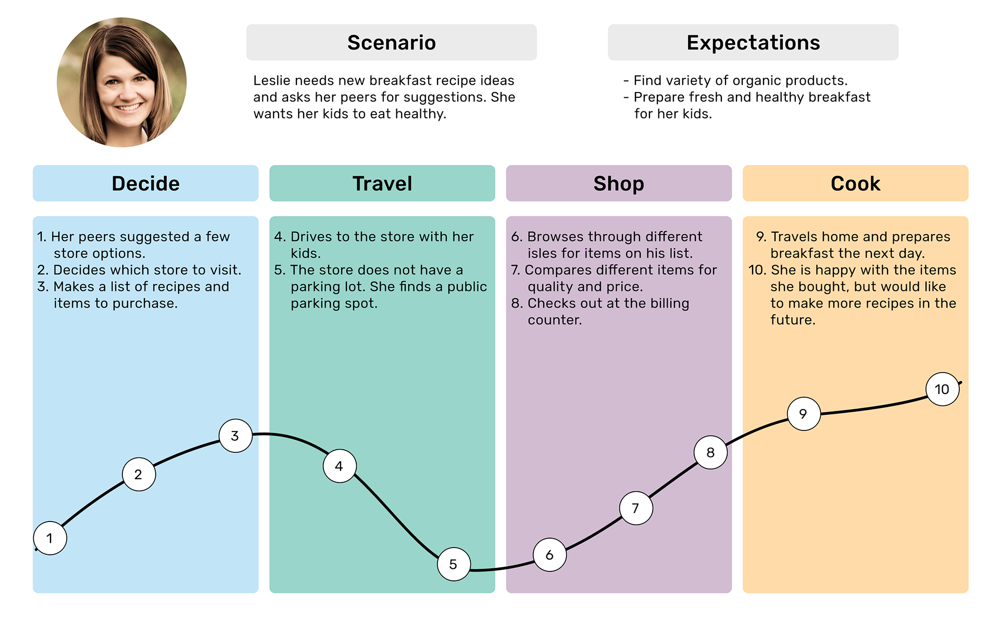
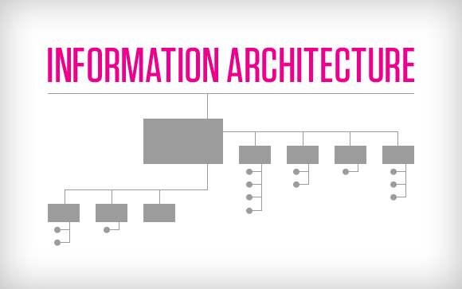
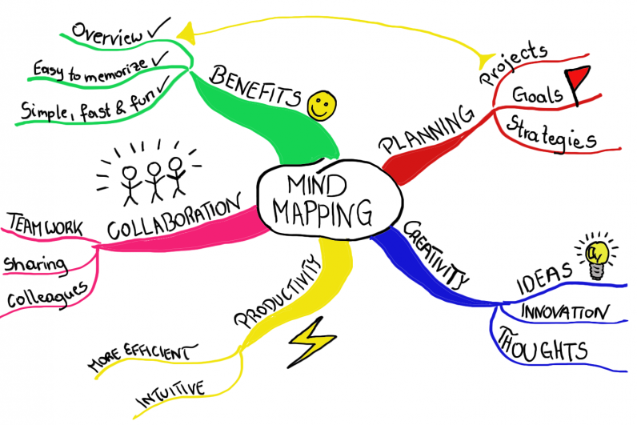

Important aspects of writing
The process of technical writing presupposes taking into account numerous aspects in order to get a text of high quality.
Work with information
There 5 ways to get information for a Technical Writer.

Project materials
- Specifications and requirements
- Estimates and analyses
- Product strategies
- Customer interviews
- Training materials
- Mockups
- Test plans
Product
- Previous product version
- Trials
- Mockups
- Test versions (test environment)
Existing documentation
- Previos version
- Similar product
- Similar type of documentation
- The same technology, but a different project
- Developer’s documentation
- Knowledge base
- Documentation for implementation departments
- Documentation for support departments
- Standards
Competition
- Competition analysis
- Open documentation portals
- Libraries
- Knowledge bases
- Product community forums
- Open social media channels
Eksperts (Subject Matter Experts – SME)
- Specialists in their fields
- Person with broad subject knowledge
- Experienced practitioner
SME
A technical writing job supposes to communicate with members of other teams, for example, with developers, designers, SMEs, and the like; and all of them are just people. They can be busy, they can forget something or they even can dislike you because of some subjective reasons. So, how to handle unresponsive SMEs if you need to interview them?
When you set a date for a business meeting, keep in mind the following tips:
Build a strong relationship with your SME. The stronger your relationship is with your SME, the more likely you are to develop successful content.
Use examples.SMEs are NOT instructional designers or course creators. Presenting them with similar end-products of what you’d like your course to look like will give them a much better idea of the content you need them to provide.
Do your homework — prepare relevant questions, the answers to those questions should not be easily found elsewhere. You should use questions as a base for discussion, don’t ask questions just one by one but discuss with them good and bad ideas, and suggest what you can improve.
Think about ways of communication that SME prefers. Maybe, it will be more suitable for them to communicate via phone, email, slack and so on.
Help SMEs with their tasks, it can be something like consulting about a presentation, proofreading a report for them, etc. You’ll show that you’re not just another team member and they will memorize you.
Style guides
A style guide is a set of standards for writing and designing contents. A style guide for technical writing defines the style that should be used in technical communication, such as in user manuals, online help, and procedural writing. A style guide helps you to write documentation in a clearer way, and to keep a consistent tone of voice and style.
Standards (STE)
Simplified Technical English(STE) was developed to help the readers of English-language documentation understand what they read, particularly when these readers are non-native English speakers.
Customer personas
A customer persona (also known as a buyer persona) is a semi-fictional archetype that represents the key traits of a large segment of your audience, based on the data you’ve collected from user research and web analytics. It gives you insight into what your prospective customers are thinking and doing as they weigh potential options that address the problem they want to solve.
The 5 best guides for creating a customer persona
The example of the persona that was created for the purpose of this project.
And the second one.

Customer journey map
A customer journey map is a visual representation of the process a customer or prospect goes through to achieve a goal with your company. With the help of a customer journey map, you can get a sense of your customers' motivations — their needs and pain points.
How to Create an Effective Customer Journey Map (Examples + Template)
Content strategy
Content strategy is the ongoing process of translating business objectives and goals into a plan that uses content as a primary means of achieving those goals.
Information architecture
Information architecture is the creation of a structure for a website, application, or other project, that allows us to understand where we are as users, and where the information we want is in relation to our position. Information architecture results in the creation of site maps, hierarchies, categorizations, navigation, and metadata.
Taxonomy
Taxonomy represents the foundation upon which information architecture stands, and all well-rounded developers should have at least a basic understanding of taxonomy to ensure that they can create organized, logical applications.
Mind mapping
A Mind Map is an easy way to brainstorm thoughts organically without worrying about order and structure. It allows you to visually structure your ideas to help with analysis and recall.
A Mind Map is a diagram for representing tasks, words, concepts, or items linked to and arranged around a central concept or subject using a non-linear graphical layout that allows the user to build an intuitive framework around a central concept. A Mind Map can turn a long list of monotonous information into a colorful, memorable and highly organized diagram that works in line with your brain's natural way of doing things.
